20/12/2024 — Đau ngực và tạo nhịp nhanh, sau đó là một nhịp nhanh QRS rộng không rõ nguyên nhân. Đã đến lúc sốc điện chuyển nhịp?
Bản dịch tiếng Việt của bài "Chest pain and rapid pacing followed by an unexplained wide complex tachycardia. Time for cardioversion?" – Dr. Smith’s ECG Blog. Giữ nguyên toàn bộ 14 hình ảnh và 1 video của bản gốc.
Bài viết của Willy Frick, có chỉnh sửa của Ken Grauer
Một bệnh nhân nam lớn tuổi có tiền sử suy tim phân suất tống máu giảm (HFrEF) không do thiếu máu cục bộ, đã được cấy thiết bị điều trị tái đồng bộ tim (CRT), và bệnh mạch vành mức độ nhẹ, đến viện vì đau ngực. Ông cho biết trong ngày đã có ba cơn đau ngực, đều xảy ra khi đang đi tiểu. Điện tâm đồ sau được ghi tại khoa cấp cứu trong lúc bệnh nhân đang đau ngực.
Điện tâm đồ 1

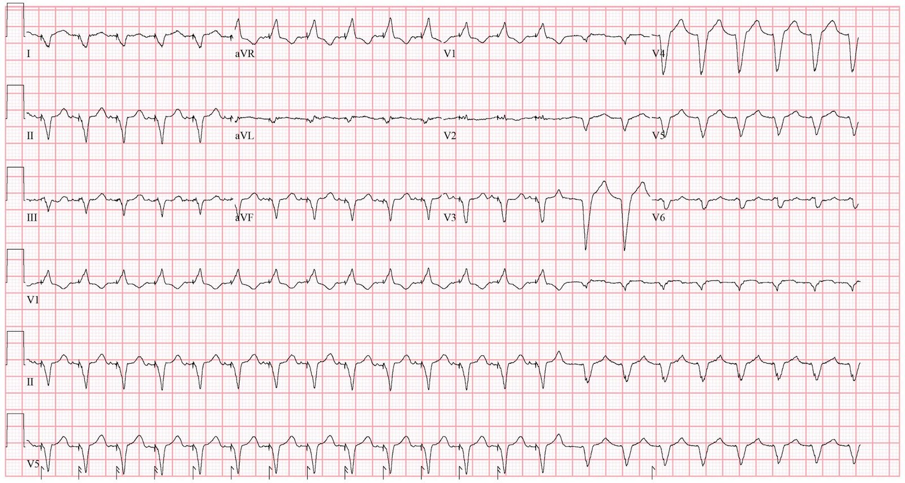
Bạn nghĩ gì?
Có rất nhiều điều diễn ra trên điện tâm đồ này. Không có bằng chứng thiếu máu cục bộ nào nổi bật. Phần gây bối rối ở đây là nhịp. Các gai tạo nhịp thất rất dễ nhận thấy. Tạo nhịp thất thông thường được thực hiện ở thất phải. Sau đó mặt sóng điện lan tuần tự từ đầu điện cực trong RV sang LV, nên thành bên trái của LV là phần khử cực sau cùng. Hãy để ý rằng đây cũng chính là trình tự xảy ra ở bệnh nhân LBBB — nhánh phải (và thất phải) khử cực nhanh, rồi vùng do nhánh trái chi phối khử cực sau cùng. Đó là lý do tạo nhịp thông thường tạo ra hình dạng LBBB.
Trên điện tâm đồ này, chúng ta thấy hình dạng thiên về RBBB hơn. Ngay cả khi không biết qua hồ sơ bệnh án rằng bệnh nhân có thiết bị CRT (“điều trị tái đồng bộ tim” – cardiac resynchronization therapy), ta vẫn có thể nhận ra điều này trên điện tâm đồ nhờ hình dạng RBBB theo sau các gai tạo nhịp. Máy tạo nhịp tạo ra hình dạng RBBB bằng cách nào? Cách phổ biến nhất là đưa một điện cực vào lỗ xoang vành ở RA, điện cực này vòng quanh phần sau bên của LV. Nhờ đó có thể tạo nhịp LV từ bên trong hệ tĩnh mạch.

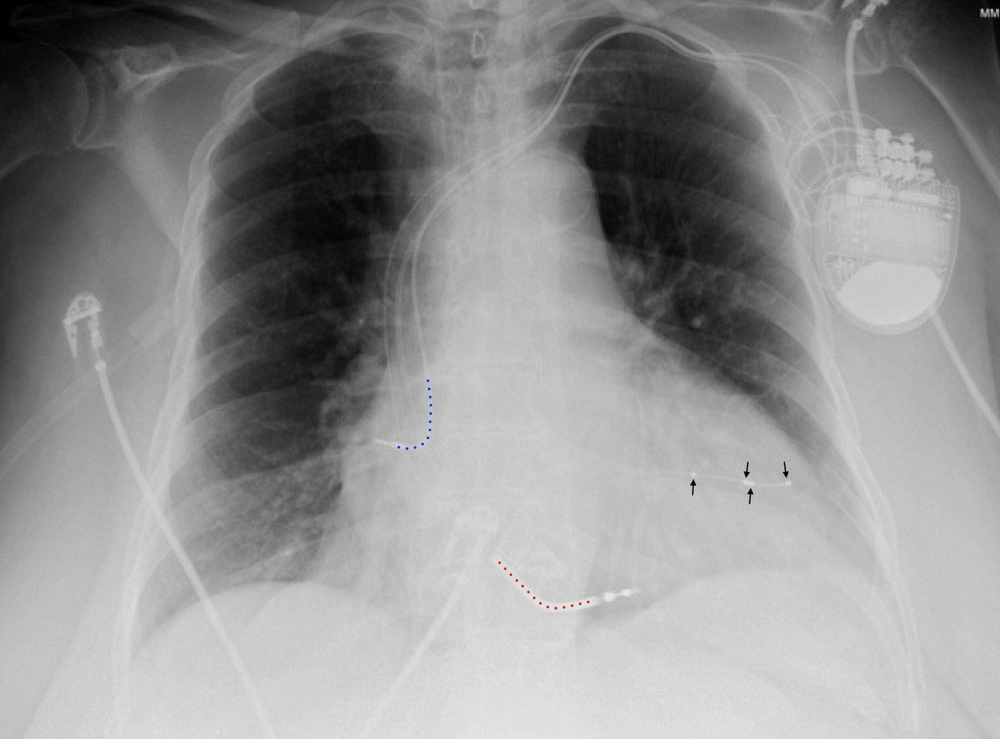
Đây là một phim X-quang ngực (CXR) minh họa của một bệnh nhân khác, cho thấy một thiết bị CRT-D điển hình
- Đường chấm màu xanh dương nằm chồng lên điện cực nhĩ phải
- Đường chấm màu đỏ nằm chồng lên điện cực RV. Cụ thể, nó nằm trên một đoạn cản quang dày hơn. Đây là cuộn sốc (shock coil), cho biết thiết bị này là một máy khử rung.
- Các đầu mũi tên màu đen chỉ vào các điện cực trên dây điện cực xoang vành (“CS” – coronary sinus). Các dây điện cực này rất thường có bốn điện cực.
=======================================
Đôi lời ngoài lề về thuật ngữ thiết bị (có thể bỏ qua):
=======================================
- Máy tạo nhịp “một buồng” (single chamber) là thiết bị chỉ có một dây điện cực. Thiết bị một buồng hay gặp nhất là loại chỉ có điện cực thất, nhưng đôi khi bệnh nhân có máy tạo nhịp một buồng nhĩ, ví dụ hội chứng suy nút xoang với nút AV còn nguyên vẹn.
- Máy tạo nhịp “hai buồng” (dual chamber) là thiết bị có một điện cực nhĩ và một điện cực thất. Loại này không giống thiết bị hai thất (biventricular) như mô tả dưới đây.
- “Máy tạo nhịp hai thất” (biventricular pacemaker) là máy tạo nhịp có một điện cực RV và một điện cực LV (thường đi qua xoang vành), như trên phim X-quang ngực ở trên.
- “Tạo nhịp hệ dẫn truyền” (conduction system pacing) là một kỹ thuật mới hơn đang được nghiên cứu như một cách tạo nhịp sinh lý hơn, thường bằng cách đưa điện cực vào vùng nhánh trái hoặc bó His.
- Thiết bị “điều trị tái đồng bộ tim” (cardiac resynchronization therapy) là thiết bị có khả năng tạo nhịp thất trái, bằng tạo nhịp hai thất hoặc tạo nhịp hệ dẫn truyền như trên.
- CRT-D là điều trị tái đồng bộ tim có kèm khả năng khử rung, như trên phim X-quang ngực ở trên.
- CRT-P là điều trị tái đồng bộ tim chỉ có chức năng tạo nhịp, không có khả năng khử rung.
Bàn thêm về CRT ở phần sau của bài
===================
Quay lại với bệnh nhân của chúng ta:
===================
Khi được gửi điện tâm đồ này, tôi được hỏi liệu phần cuối có thể là VT hay không. Về mặt hình dạng, điện tâm đồ có thể chia thành hai phần như dưới đây

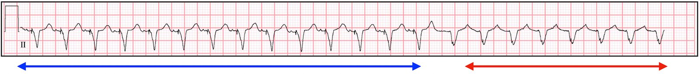
Phần đầu của điện tâm đồ (nằm giữa các mũi tên xanh dương) có hình dạng nhất quán, phần sau của điện tâm đồ (nằm giữa các mũi tên đỏ) cũng vậy. Nhưng có điều gì đó xảy ra ở giữa, tạo nên sự chuyển tiếp. Hãy bắt đầu bằng việc tập trung vào phần đầu. Đây là một nhát bóp đại diện của phần đó.

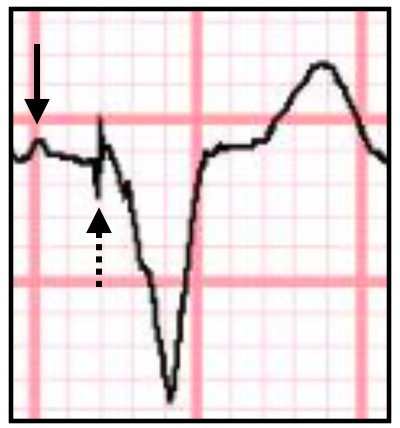
Mũi tên đen chỉ vào một sóng P tự thân (tức là không phải do tạo nhịp). Mũi tên đen nét chấm chỉ vào một gai tạo nhịp tạo ra QRS. Nếu không có điện tâm đồ nào để so sánh, bạn có thể nghĩ sóng P này có nguồn gốc xoang, nhưng so sánh với một bản ghi một tuần trước cho thấy không phải vậy.
Điện tâm đồ 2

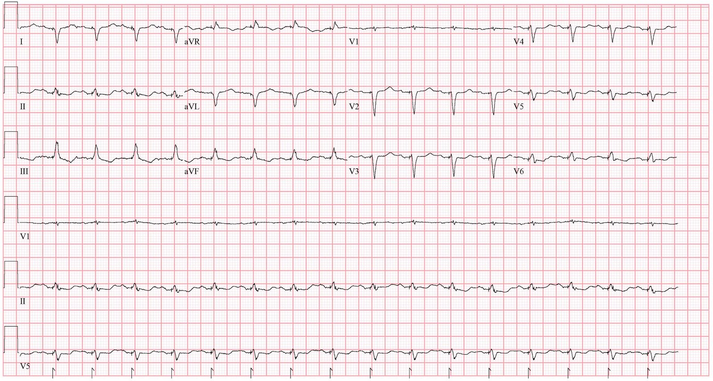
Điện tâm đồ 2 rõ ràng là nhịp xoang — sóng P dương ở các chuyển đạo I, II, aVF với hình dạng khá điển hình, cùng sóng P hai pha điển hình ở V1. Ngược lại, điện tâm đồ 1 có hình dạng khác. Thêm vào đó, bệnh nhân không có lý do rõ ràng nào khác để có nhịp nhanh xoang (như giảm thể tích, chảy máu, sốt). Vì vậy, nhịp có khả năng nhất trên điện tâm đồ 1 là nhịp nhanh nhĩ lạc chỗ.
Do đó, phần đầu của điện tâm đồ 1 cho thấy nhịp nhanh nhĩ lạc chỗ kèm tạo nhịp hai thất. Vậy điều gì xảy ra ở đoạn sau của bản ghi làm thay đổi điều này? Đây là hình phóng to giai đoạn chuyển tiếp.

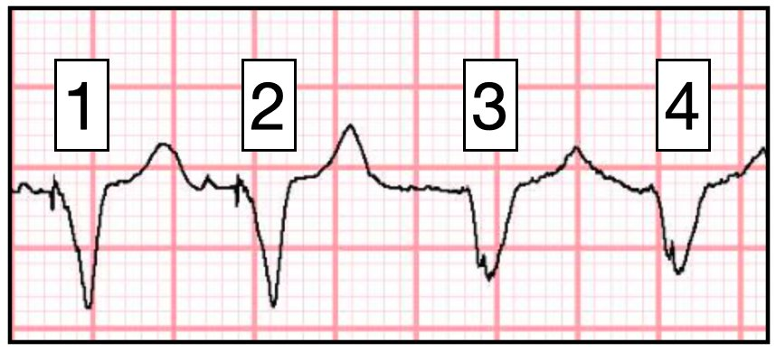
Bạn có thể nhận ra điều gì đã thay đổi ở đây không?
Gợi ý: Hãy tập trung vào các sóng T!
Hãy để ý rằng sóng T của R2 cao hơn sóng T của R1, nhiều khả năng do có sóng P ẩn bên trong. Giải thích hợp lý nhất là sóng P theo sau R2 có khoảng ghép ngắn hơn (tức là đến sớm hơn dự kiến) và rơi vào PVARP (thời kỳ trơ nhĩ sau thất của máy tạo nhịp), do đó không được nhận cảm. Vì không được nhận cảm nên không có nhát tạo nhịp theo sau. Nhưng sóng P này vẫn có thể dẫn truyền tự thân.
Có hai điểm quan trọng cần làm rõ ở đây.
Điểm 1:
PVARP là gì? Trả lời: PVARP là một tính năng có thể lập trình trong máy tạo nhịp, được thiết kế để ngăn nhịp nhanh do máy tạo nhịp. PMT, còn gọi là nhịp nhanh vòng lặp vô tận (endless loop tachycardia), được giải thích trong video này:
Đây là một ảnh tĩnh lấy từ video để tiện tham khảo. Hãy tự kiểm tra bằng cách xem bạn có thể nhẩm lại các bước trong đầu mà không nhìn vào ảnh hay không.

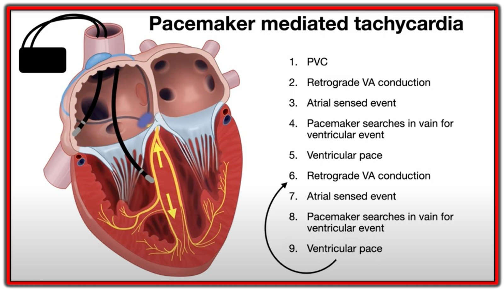
Khi máy tạo nhịp hai buồng hoạt động bình thường, các biến cố thất hiếm khi dẫn truyền ngược dòng lên tâm nhĩ. Khi máy tạo nhịp hai buồng hoạt động bình thường, phần lớn các biến cố thất thuộc một trong hai nhóm sau:
- Dẫn truyền tự thân từ tâm nhĩ, qua nút AV, xuống tâm thất. Trong trường hợp này, vì nút AV vừa cho phép dẫn truyền xuôi dòng nên nó đang trơ và sẽ không cho phép dẫn truyền ngược dòng.
- Tạo nhịp thất do dẫn truyền xuôi dòng thất bại trong bối cảnh blốc tim. Trong trường hợp này, blốc tim hầu như luôn là blốc hai chiều. Đặc biệt, có blốc ngược dòng.
PVC phá vỡ điều này vì có thể xảy ra vào thời điểm nút AV đã hồi phục và do đó có thể cho phép dẫn truyền ngược dòng.
PVARP là một khoảng thời gian (thường khoảng 250 ms) sau một biến cố thất, trong đó máy tạo nhịp bỏ qua mọi hoạt động nhĩ. Ý tưởng là hoạt động nhĩ xảy ra ngay sau hoạt động thất nhiều khả năng là sóng P ngược dòng. Bằng cách bỏ qua nó, máy tạo nhịp giảm khả năng xảy ra PMT. Cụ thể, nó phá vỡ bước 3 (và 7) trong video.
Điểm 2:
Ngay từ đầu, tại sao biến cố nhĩ lại có thể dẫn truyền tự thân qua nút AV? Có thể bạn đang nghĩ: “Chẳng phải sóng P đó lẽ ra phải bị blốc ở nút AV sao? Nếu không thì bệnh nhân mang máy tạo nhịp để làm gì?” Nhưng các thiết bị điều trị tái đồng bộ tim (CRT) thường được cấy cho những bệnh nhân có dẫn truyền AV xuôi dòng còn nguyên vẹn. Một bệnh nhân CRT điển hình là người có EF từ 35% trở xuống và LBBB rộng (trên 150 ms). Thiết bị giúp bệnh nhân bằng cách khôi phục sự đồng bộ cơ học cho một hệ dẫn truyền bị bệnh. Hãy xem phép so sánh sau:

Hãy tưởng tượng bạn đang ở trên một chiếc thuyền chèo và muốn vào bờ nhanh nhất có thể. Bạn sẽ:
- Chèo bên phải, chờ 10 giây, rồi chèo bên trái
- Chèo bên trái, chờ 10 giây, rồi chèo bên phải
- Chèo cả hai bên cùng lúc
Dĩ nhiên, cách di chuyển hiệu quả nhất là chèo đồng bộ cả hai bên. Đó là điều các vận động viên chèo thuyền Olympic làm. Giống như chiếc thuyền chèo, thất trái hoạt động hiệu quả nhất như một cái bơm khi toàn bộ thất co bóp đồng bộ. Ở bệnh nhân có LBBB rất rộng (đặc biệt > 150 ms), rất nhiều công cơ học bị lãng phí vì vách liên thất co trước và thực ra đã bắt đầu giãn khi thành bên co. Tạo nhịp cả hai bên cùng lúc cải thiện sự đồng bộ cơ học của thất trái.
Điều quan trọng là CRT chỉ có tác dụng khi nó đang tạo nhịp. Trái với máy tạo nhịp hai buồng thông thường, nơi chúng ta thường cố hạn chế lượng tạo nhịp, mục tiêu của CRT là 100% tạo nhịp thất. Nếu không, bạn sẽ không nhận được lợi ích của thiết bị!
Bệnh nhân này có dẫn truyền AV còn nguyên vẹn. Nếu có sóng P nằm trong PVARP, máy tạo nhịp sẽ không phát hiện được nó, và do đó sẽ không tạo nhịp. Nhưng sẽ có dẫn truyền tự thân. Hình dưới đây biểu diễn PVARP là một ô màu xám (trong ví dụ này = 300 ms). Mũi tên đỏ chỉ vào sóng P của nhịp nhanh nhĩ đến “đúng lúc”, nằm ngoài PVARP (do đó được phát hiện, và theo sau là một gai tạo nhịp), còn mũi tên đen chỉ vào một sóng P nhịp nhanh nhĩ đến sớm, rơi vào trong PVARP. Vì nằm trong PVARP nên máy tạo nhịp bỏ qua nó. Sóng P này được theo sau bởi dẫn truyền tự thân, và do đó là một QRS có hình dạng khác, không có gai tạo nhịp nào.

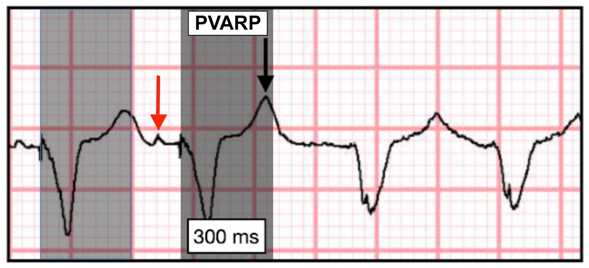
Sóng P dẫn truyền tự thân có khoảng PR dài hơn. (Thực tế, khoảng này khá dài — khoảng 310 ms. Điều này là do một đặc tính của nút AV gọi là “dẫn truyền giảm dần” (decremental conduction), trong đó một xung đến sớm sẽ được dẫn truyền chậm hơn.) Và vì nhịp nhanh nhĩ nền có độ dài chu kỳ tương đối hằng định, về mặt toán học điều này dẫn đến khoảng RP ngắn hơn. Thời gian của chu chuyển tim có thể được biểu diễn như sau.
Thời gian chu chuyển tim = PR + RP
Nếu thời gian chu kỳ không đổi và PR tăng, thì RP bắt buộc phải giảm. Kết quả là mọi sóng P tiếp theo đều rơi vào PVARP, do đó bị máy tạo nhịp bỏ qua và được phép dẫn truyền tự thân.

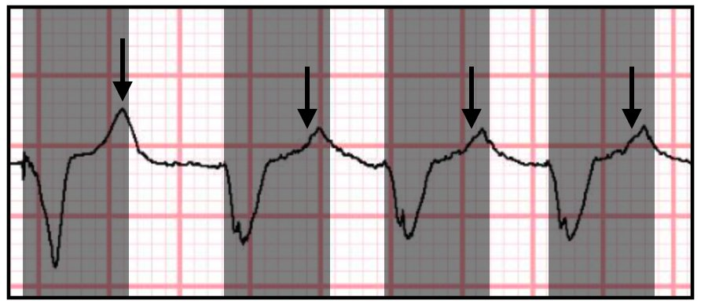
Tác động của PVARP còn được biểu diễn bằng sơ đồ qua ví dụ sau, là một đoạn khác lấy từ kết quả kiểm tra máy tạo nhịp của bệnh nhân.
- AS = biến cố nhĩ được nhận cảm (ví dụ một sóng P)
- AR = biến cố nhĩ trong thời kỳ trơ (ví dụ một sóng P nằm trong PVARP)
- VP = tạo nhịp thất (ví dụ QRS do tạo nhịp)
- VS = biến cố thất được nhận cảm (ví dụ QRS tự thân)

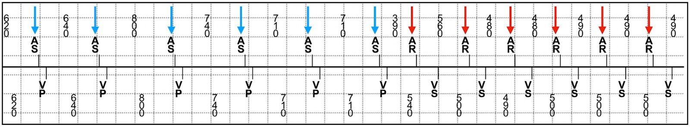
Các mũi tên xanh dương chỉ vào những gì nhiều khả năng là sóng P xoang. Các mũi tên đỏ chỉ vào những gì nhiều khả năng là sóng P của nhịp nhanh nhĩ lạc chỗ (kèm tần số tăng đột ngột). Hãy để ý rằng máy tạo nhịp ngừng tạo nhịp ngay khi nhịp nhanh khởi phát, do các sóng P rơi vào PVARP.
TRỞ LẠI CA BỆNH:
Bệnh nhân được xét nghiệm troponin nhiều lần, kết quả trong giới hạn bình thường. Do có triệu chứng trong lúc nhịp nhanh QRS rộng, đã có câu hỏi đặt ra là liệu bệnh nhân có nên được sốc điện chuyển nhịp hay không.
Nhưng nhịp nhanh nhĩ lạc chỗ thường gặp nhất là một rối loạn nhịp do tăng tính tự động. Sự thay đổi độ dài chu kỳ (gọi là “dao động” – wobble) trong ca này cũng ủng hộ cơ chế tự động. Sốc điện chuyển nhịp sẽ tạm thời thiết lập lại AT, nhưng nhiều khả năng nó sẽ tái phát ngay lập tức.
Sốc điện chuyển nhịp có lợi nhất với các rối loạn nhịp do vào lại (ví dụ VT, cuồng nhĩ, AVNRT, rung nhĩ) vì nó cắt đứt vòng vào lại. Nhịp nhanh nhĩ đôi khi có thể do vào lại, nhưng các vòng vào lại thường có độ dài chu kỳ ổn định hơn, không thay đổi nhiều từ nhát này sang nhát khác như vậy.
Bệnh nhân được điều trị bằng amiodarone, thuốc đã ức chế được nhịp nhanh nhĩ, và các triệu chứng của ông hết hẳn. Không có gì đáng ngạc nhiên khi triệu chứng của ông liên quan đến việc đi tiểu, vì các rối loạn nhịp nhanh nhĩ được biết là gây đa niệu (Kinney và cs., Kaye và cs., Canepa-Anson và cs.), có lẽ một phần do tăng sản xuất peptide lợi niệu natri.
Những điểm cần học:
- So sánh các điện tâm đồ liên tiếp để phân biệt hoạt động xoang với hoạt động nhĩ lạc chỗ
- Hiểu về nhịp nhanh do máy tạo nhịp
- Hiểu mục đích của PVARP
- Khác biệt giữa máy tạo nhịp hai buồng thông thường và CRT
Một ca nhịp nhanh do máy tạo nhịp khác:
Ventricular Fibrillation, ICD, LBBB, QRS of 210 ms, Positive Smith Modified Sgarbossa Criteria, and Pacemaker-Mediated Tachycardia (Rung thất, ICD, LBBB, QRS 210 ms, tiêu chuẩn Sgarbossa cải biên theo Smith dương tính, và nhịp nhanh do máy tạo nhịp)

===================================
BÌNH LUẬN CỦA TÔI, bởi KEN GRAUER, MD (20/12/2024):
===================================
Việc xử lý sự cố trên điện tâm đồ máy tạo nhịp tiếp tục ngày càng trở nên khó khăn đối với những bác sĩ lâm sàng không thường xuyên gặp các bản ghi như vậy trong thực hành. Đã qua rồi cái thời chỉ cần liếc qua là dễ dàng xác định thiết bị có nhận cảm và tạo nhịp phù hợp hay không.
- Chính vì máy tạo nhịp hiện nay là những thiết bị hiệu quả đến kinh ngạc — mà việc nhận ra trục trặc của máy tạo nhịp lại có thể khó khăn đến vậy.
Thú nhận: Tôi thấy ca hôm nay thật hấp dẫn và sâu sắc. Tôi đã bị đánh lừa ở một số khía cạnh của ca này và những bình luận của tôi dựa trên sự hiểu biết đã được cải thiện của mình. Xin cảm ơn Bác sĩ Frick vì những nhận định và bàn luận tuyệt vời.
Như Bác sĩ Frick đã nói — có rất nhiều điều diễn ra trên điện tâm đồ ban đầu của ca hôm nay, mà tôi đã đăng lại trong Hình 1:
- Vì bệnh nhân hôm nay đến viện khi đang có CP (Chest Pain – đau ngực) — cần ưu tiên cao cho việc đánh giá các dấu hiệu thiếu máu cục bộ trên điện tâm đồ. Nhưng để làm điều đó — chúng ta cần tách các nhát tạo nhịp khỏi các phức bộ QRS dẫn truyền.
Như Bác sĩ Frick đã nói — điện tâm đồ ban đầu này về mặt hình dạng được chia thành 2 phần:
- Phần 1 của dải nhịp này gồm các nhát #1 đến #14. Như Bác sĩ Frick đã nói — các mũi tên HỒNG trong Hình 1 đánh dấu các sóng P lạc chỗ của ATach (Atrial Tachycardia – nhịp nhanh nhĩ) lạc chỗ ở bệnh nhân này — với tần số nhĩ nhanh ~135/phút.
- Nhưng như Bác sĩ Frick đã chỉ ra ở trên — vì các sóng P có mũi tên HỒNG này xảy ra ngoài giới hạn của PVARP — nên các sóng P nhĩ lạc chỗ này được máy tạo nhịp nhận cảm — đó là lý do mỗi xung nhĩ lạc chỗ này đều dẫn đến một nhát tạo nhịp.
Tôi đã nghĩ mũi tên XANH DƯƠNG làm nhọn sóng T của nhát #14 là một xung nhĩ đến sớm từ một vị trí nhĩ khác (tức là một PAC).
- Mặc dù ATach lạc chỗ có thể biểu hiện một mức độ thay đổi khoảng P-P nào đó — khoảng P-P chỉ thay đổi rất ít (nếu có) ở phần còn lại của bản ghi trong Hình 1 — đó là lý do tôi nghĩ sóng P đến sớm hơn dự kiến nhiều này là một PAC.
- Ý nghĩa lâm sàng của việc sóng P có mũi tên XANH DƯƠNG là một PAC — là PAC này giờ “rơi” vào trong giới hạn của PVARP — nghĩa là máy tạo nhịp không nhận cảm PAC này — đó là LÝ DO phức bộ QRS tiếp theo ( = nhát #15) không phải do tạo nhịp, mà là một nhát dẫn truyền (dù có khoảng PR rất dài).
- Điểm MẤU CHỐT: Nếu không có PAC này — việc tạo nhịp theo mỗi xung nhĩ lạc chỗ sẽ tiếp tục.
- Chính vì nhịp nền trên điện tâm đồ #1 là ATach lạc chỗ — nên sau khoảng ngưng rất ngắn do PAC gây ra (tức là sóng P có mũi tên XANH DƯƠNG) — ATach lạc chỗ tiếp tục ở Phần 2 của dải nhịp này, thể hiện qua các sóng P có mũi tên ĐỎ, được nhận ra nhờ sự “nhọn” thêm của các sóng T đi trước.
- Lưu ý rằng khoảng P-P giữa các sóng P lạc chỗ có mũi tên ĐỎ này hầu như giống hệt khoảng P-P ta đã thấy trước đó giữa các sóng P có mũi tên HỒNG. Tuy nhiên, khoảng PR trước các nhát #15 đến #22 dài hơn khoảng PR trước các nhát #1 đến #14 vì các nhát ban đầu này là nhát tạo nhịp (máy tạo nhịp được kích hoạt ngay sau khi nhận cảm các sóng P có mũi tên HỒNG) — trong khi tất cả các nhát sau nhát #15 đều được dẫn truyền từ các sóng P nhĩ lạc chỗ.
Điều đã khiến tôi Bối rối …
- Khi lần đầu nhìn thấy bản ghi hôm nay — tôi đã nghĩ khía rất thẳng thấy ở chuyển đạo II bắt đầu từ nhát #15 (trong các vòng tròn ĐỎ nét chấm) là một gai tạo nhịp, vì nó rất giống hình dạng các gai tạo nhịp thấy ngay trước QRS của các nhát #1 đến #14. Dù vậy — tôi không thể hiểu tại sao một gai tạo nhịp lại xuất hiện ở giữa QRS của các nhát #15 đến #22.
- Đây là sai lầm của tôi. Trong khi gai tạo nhịp thấy rõ ở tất cả các chuyển đạo có phức bộ tạo nhịp — thì chuyển đạo duy nhất có nhát dẫn truyền cho thấy khía (mà tôi đánh dấu trong các vòng tròn ĐỎ nét chấm) là chuyển đạo II. Không thấy khía như vậy trong QRS của các nhát dẫn truyền #15 và 16 ở các chuyển đạo V1,V2,V3 — cũng như của các nhát dẫn truyền #17 đến #22 ở các chuyển đạo V4,V5,V6. Vì vậy tôi hoàn toàn đồng ý với Bác sĩ Frick rằng khía ở chuyển đạo II này chỉ đơn giản phản ánh sự phân mảnh QRS do bệnh tim nền nặng của bệnh nhân.
Có thay đổi ST-T cấp tính không?
Giờ khi đã biết nhịp — việc đánh giá các thay đổi QRST dễ hơn nhiều. Xem xét hình dạng QRS của tất cả các phức bộ dẫn truyền (tức là các nhát #15,16 ở các chuyển đạo V1,V2,V3 — các nhát #17 đến #22 ở dải nhịp chuyển đạo II dài và ở các chuyển đạo V4,V5,V6) — Chúng ta có thể nói như sau:
- QRS của các nhát dẫn truyền rộng. Điều này phản ánh một rối loạn dẫn truyền nền (có khả năng) — hay phản ánh dẫn truyền lệch hướng liên quan tần số (tần số tim ~135/phút với ATach này) — thì chưa chắc chắn.
- Có phân mảnh ở chuyển đạo II — và chỉ có sóng r rất nhỏ ở các chuyển đạo II,V5,V6 — với phức bộ QS ở các chuyển đạo còn lại.
- Các dấu hiệu trên gợi ý nhồi máu diện rộng cũ. Dù vậy — hình dạng ST-T ở tất cả các chuyển đạo có nhát dẫn truyền này không gợi ý một biến cố cấp đang diễn ra.
- T.B. (P.S.): Tìm trong hồ sơ của bệnh nhân một điện tâm đồ không tạo nhịp trước đây có thể sẽ hữu ích như một nguồn để so sánh với hình dạng QRST của các nhát dẫn truyền trên bản ghi hôm nay.
“12 chuyển đạo tốt hơn một” …
Như một minh họa cuối cùng cho việc sử dụng tối ưu các chuyển đạo ghi đồng thời — Hãy xem xét hình dạng QRS của cả 22 nhát ở dải nhịp chuyển đạo II dài và dải nhịp chuyển đạo V5 dài.
- Cả nhát tạo nhịp lẫn nhát dẫn truyền ở các chuyển đạo II và V5 trông tương tự nhau, ở chỗ tất cả các nhát đều có phức bộ QRS rộng, gần như âm hoàn toàn.
- Dù vậy — thật DỄ nhận ra QRS trông khác đến mức nào ở chuyển đạo V1 dài, bắt đầu từ nhát #15 (cũng như ở các chuyển đạo ghi đồng thời V1,V2,V3) ==> “12 chuyển đạo tốt hơn một”.

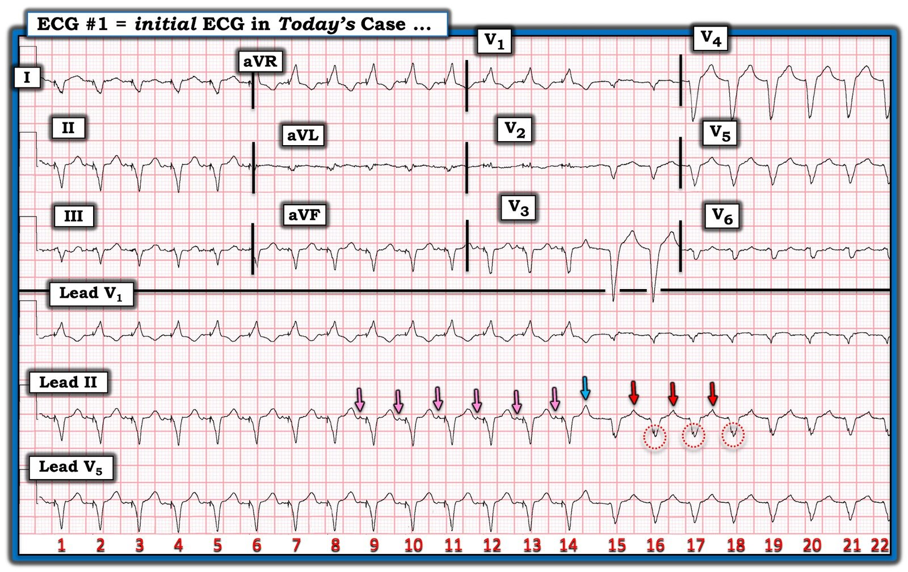
Giản đồ bậc thang đề xuất:
Tôi đề xuất giản đồ bậc thang (laddergram) tôi đã vẽ trong Hình 2 — với hy vọng làm rõ cách tôi hiểu các sự kiện trên bản ghi ban đầu hôm nay. Để phóng to các sự kiện trong giai đoạn chuyển tiếp then chốt — tôi tập trung vào các nhát #12 đến #18 ở chuyển đạo II.
- Các sóng P có mũi tên HỒNG là sóng P của ATach lạc chỗ. Vì các sóng P này xảy ra ngoài giới hạn của PVARP — các sóng P lạc chỗ này được máy tạo nhịp nhận cảm (các đường HỒNG nét chấm từ nhĩ xuống thất) — nhờ đó tạo ra các nhát tạo nhịp thất #12,13,14.
- Sóng P có mũi tên XANH DƯƠNG xảy ra sớm hơn nhiều so với dự kiến (do đó nhiều khả năng là một PAC xuất phát từ một nơi khác trong tâm nhĩ). PAC này dẫn truyền xuống thất (dù với khoảng PR kéo dài rất nhiều) tạo ra nhát #15.
- Sau một khoảng ngưng ngắn — ATach lạc chỗ tiếp tục. Nhưng do khoảng ghép ngắn hơn của các sóng P lạc chỗ có mũi tên ĐỎ này (khiến các sóng P này giờ nằm trong PVARP) — máy tạo nhịp không còn nhận cảm được các sóng P này nữa. Kết quả là ATach lạc chỗ tiếp tục từ nhát #16, với tất cả các sóng P nhĩ lạc chỗ giờ đều được dẫn truyền.

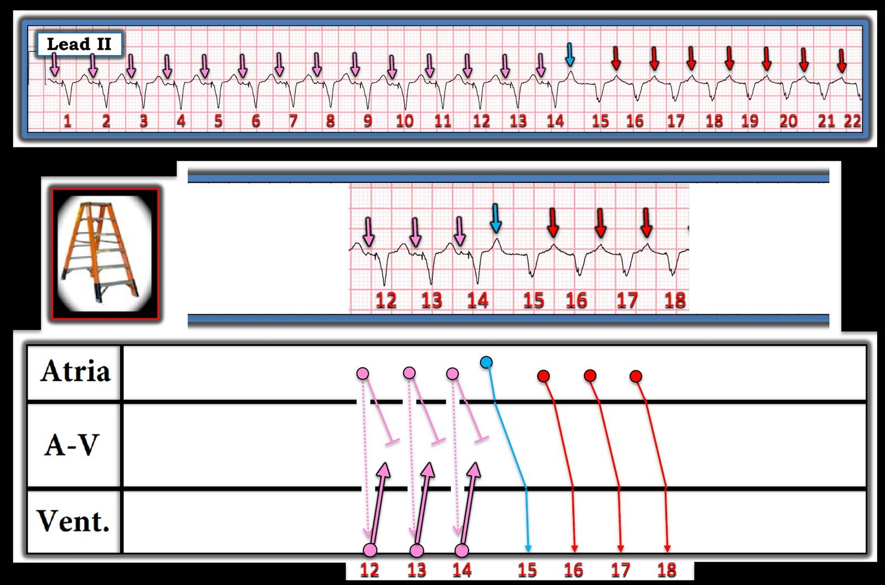